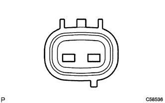
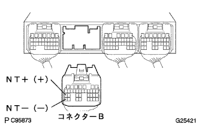

DTC P1725/37 Turbine speed sensor system |
| DTC No. | DTC detection conditions
| Inspection site |
|---|---|---|
| P1725/37 |
|
|
| Step 1 | Transmission Revolution Sensor Single Inspection (NT) |
|  |
Cut the connector of Transmitsu Shijon Revoli Yushiyon Sensa (NT).
Use SST (Toyota Electrical Tester) to check the resistance between terminals.
|
| ||||
| OK | |
| Step 2 | Wire harness or connector inspection (Transmitsu-yon Revoli Yushiyon Sensa (NT) -An engine control compilation) |
Connect the connector of Transmitsu Shion Revoli Yusho Sensor (NT) and disconnect the connector B of the engine controlled compilation.
|  |
Use SST (Toyota Electrical Tester) to check the resistance between terminals.
(The terminal array isreference)
| Terminal number (terminal symbol) | Resistance value [ω] |
|---|---|
| B27 (NT+) ← → B35 (NT-) | 560-680 (20 ° C) |
|
| ||||
| OK | ||
| ||